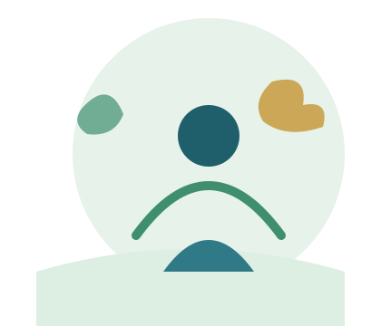

Mente Viva
Mente Viva
Saúde Mental
Entenda por que cuidar da mente é parte essencial da saúde geral.
Informação, prevenção e promoção para uma vida mais saudável.
O Mente Viva é um projeto acadêmico educativo que reúne informações sobre saúde mental, qualidade de vida, prevenção e promoção da saúde, pensado para ser acessível a qualquer pessoa, em qualquer dispositivo.

A saúde mental faz parte da saúde como um todo. Ela influencia como pensamos, sentimos, nos relacionamos e lidamos com os desafios do dia a dia. Cuidar da mente é tão importante quanto cuidar do corpo, e conversar abertamente sobre o tema ajuda a reduzir preconceitos e a aproximar as pessoas da informação e do apoio de que precisam.
Qualidade de vida vai além da ausência de doenças: envolve sono, alimentação, relações sociais, lazer, trabalho e equilíbrio emocional. Quando a saúde mental é cuidada, fica mais fácil manter esse equilíbrio e enfrentar as fases mais difíceis com mais recursos internos.
Prevenir é criar, no cotidiano, pequenas condições para que o sofrimento emocional não se acumule silenciosamente: dormir bem, manter vínculos, pedir ajuda quando necessário e observar os próprios sinais de cansaço e tristeza persistente. Prevenção não é diagnóstico — é cuidado contínuo.
Entenda por que cuidar da mente é parte essencial da saúde geral.
Hábitos e atitudes do dia a dia que ajudam a proteger o bem-estar emocional.
Ver mais →Descubra como diferentes áreas da vida se conectam ao bem-estar.
Ver mais →Ações coletivas e individuais que fortalecem comunidades mais saudáveis.
Ver mais →Um site pensado para ser usado por todas as pessoas, com ou sem deficiência.
Ver mais →Este site foi construído com foco em acessibilidade: navegação por teclado, contraste adequado, textos alternativos em imagens e controles para ajustar fonte e contraste. Conheça os recursos disponíveis.
Conhecer os recursos de acessibilidade